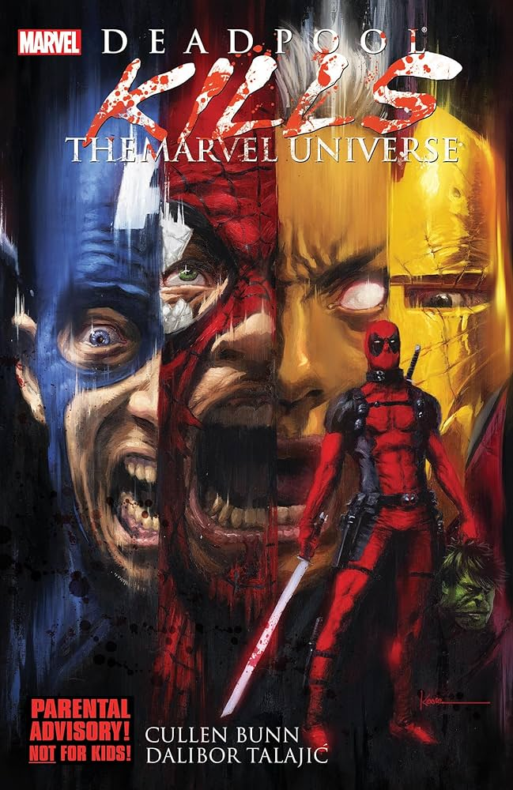
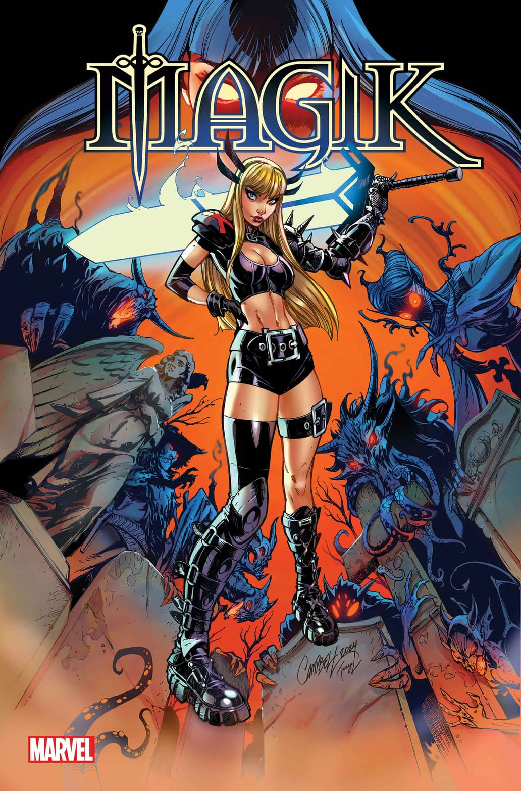

Deadpool Kills the Marvel Universe

This is a comic about Deadpool being trapped in a mental hospital who is being experimented on. After being electrocuted, he makes a ground breaking realization about his universe and decides to kill every person with powers in his universe. He is after everyone person with powers. No hero, antihero, or villain is safe.
Magik

This comic follows the mutant Magik, who struggles with a powerful inner demon trapped inside her. When dark forces begin targeting mutants to complete a dangerous ritual, she is forced to confront the leader of the demons and face her own darker side. As the threat grows, Magik must fight without losing control of the power she fears most.